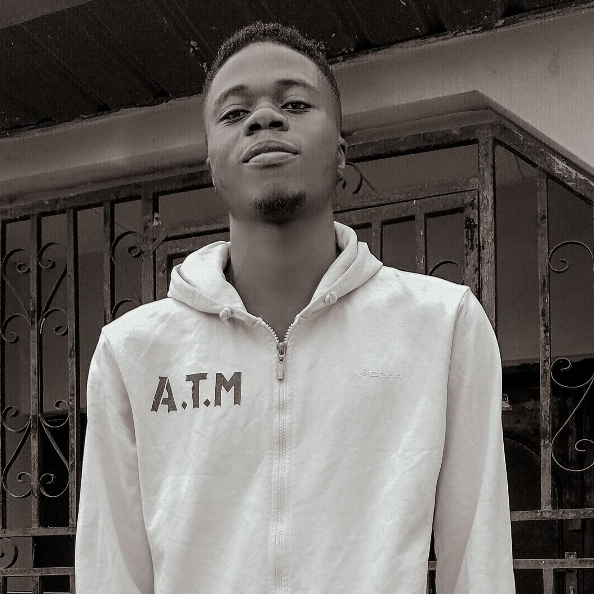

AYEGUN OLUWAFERANMI EMMAUEL

Profile Summary
I am a dedicated Web Developer and Graphic Designer
with a passion for creating visually appealing and
highly functional digital experiences. With a strong
foundation in both front-end and back-end development,
I bring a unique blend of technical expertise and creative
flair to every project.
Education
- Electrical and Electronics Engineering, Waziri Umaru
Federal
polytechnic, Birnin Kebbi
Work Experience
Graphic designer for valued vessel initiative (VAVE)
July 2020 - Present
- Flyers for Refined Temple Conference 2023
- Flyer for Timigrace tribe retreat 2.0
- Flyer for Evergreen Teen's Prayer Conference
- Flyer for Wholesome declaration
Graphic designer for the light bearers ministry
2020 till Present
- Flyers for village outreaches
- New month flyers
- Special program flyers
Graphic designer for Oladotun Agbadaola foundation
Skills
- Web development
- Graphic designer
- CAD designer
- Electrical/solar technician
Award and Certification
- The complete 2022 PV Solar Energy|
PVsys, Excel &AutoCAD
- Basic HTML Certification
- Advanced HTML Certification
- Digitex Graphic Design Certification
Others